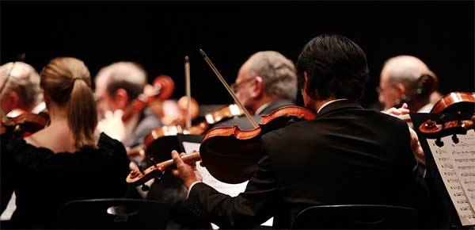

Sedert ik 8 jaar was beoefende ik het instrument viool.
Deze hobby doe ik nog altijd heel graag. Ik speel de klassieke versie.
Een van mijn andere hobby's is tekenen, omdat het me de ruimte geeft om creatief te zijn en te ontspannen.
Mijn laatste hobby is gamen, omdat het me helpt te ontspannen en in spannende werelden te duiken.
Een game die ik bijvoorbeeld speel heet HOI4, een strategie spel dat zich focust op WOII.
Mijn lievelings zangeres heet Alizée ze is een populaire Franse zangeres en danseres.
Ze brak door met de hit "Moi... Lolita" in 2000, wat haar een wereldwijd publiek opleverde.
De zangeres staat vooral bekend om haar unieke popgeluid en energieke dansperformances.
Franse chansons zijn leuk vanwege hun emotionele diepgang en poëtische teksten, vaak vol romance en nostalgie.
Klassieke muziek biedt een andere schoonheid, met meesterwerken van componisten zoals Bach en Mozart. Het roept intense emoties op door complexe harmonieën en rijke instrumentatie, waardoor het een tijdloze ervaring is voor luisteraars.
Maleficent: Mistress of Evil is de sequel op de Disneyfilm Maleficent.
In deze film, met Angelina Jolie als Maleficent en Elle Fanning als Aurora, moeten ze samen de kwaadaardige koningin
Ingrith (Michelle Pfeiffer) bestrijden. De film verkent thema's van familie en de strijd tussen goed en kwaad.
.png)